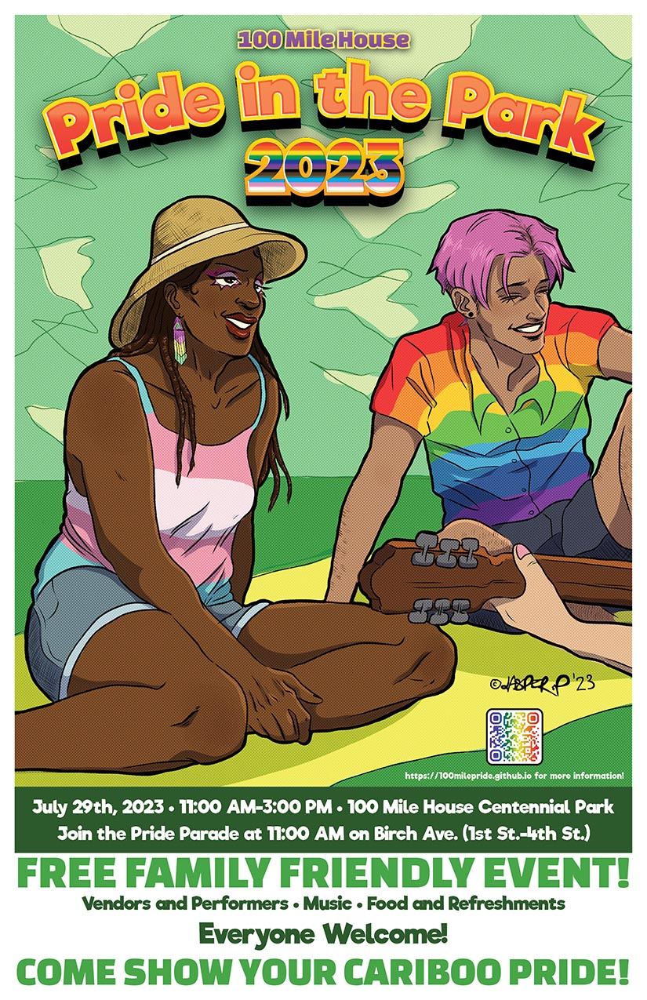
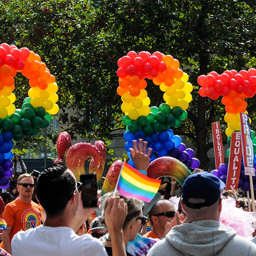
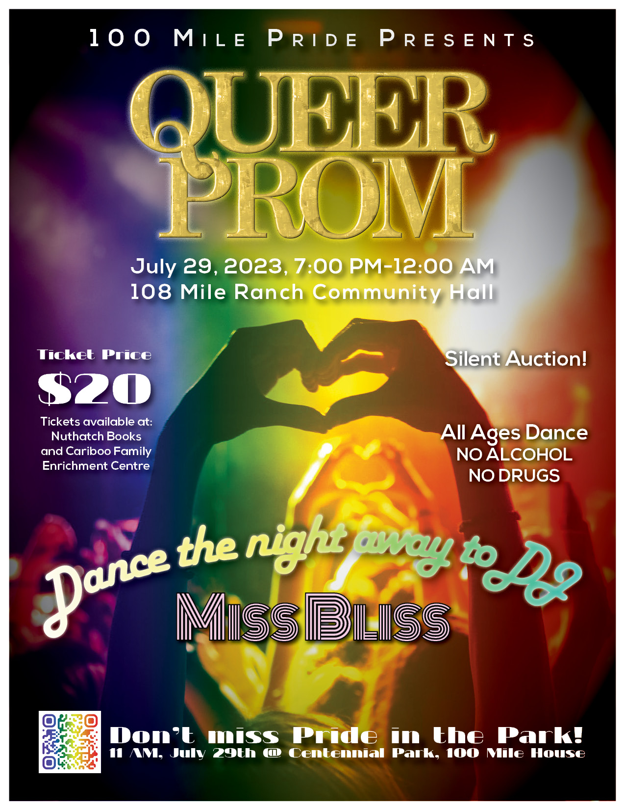

Pride Performers
Throughout the event, 100 Mile House will have a chance to see some spicy performances from these exciting queens:
Come show your Cariboo Pride at the Pride in the Park event on Saturday, July 29th! Organized by the 100 Mile Pride Committee, this year features the first annual pride parade, which kicks off the event on Birch Ave. at 11:00 AM. The parade travels from First St. to Fourth St. and down to Centennial Park, where there will be music, performances, vendors, and tonnes of fun! Food and refreshments will be available. Don’t forget to check the forecast and come prepared for rain or sun! Everyone is welcome to this family-friendly inclusive event.
Throughout the event, 100 Mile House will have a chance to see some spicy performances from these exciting queens:
Ella Lamoureux, the 2Spirit Goddess, is one of the founding performers of the Kelowna drag scene. From Kelowna’s Next Drag Superstar drag competition, Embodiment, #2muffs1collr, to recent star on Call Me Mother, Ella has carved out her place as one of the most influential and stunning drag performers in Kelowna. A makeup artist by trade, Ella will eternally tease you with her beauty. But, watch out if you displease her — that tongue is quick and sharper than you think! She’s generally “as sweet as cherry pie” and she brings so much love and joy to the community. A true charmer, Ella Lamoureux is Kelowna’s Sweetheart.
Abb ’Original is back again this year! Read Abb's provided bio:
Morgan Whitehead, known as semi-professional drag queen Abb ’Original was raised on the rez in rural Saskatchewan. Now,
29 years old living in Vancouver/The Lower Mainland/Burnaby close to Metrotown but sometimes visits Richmond, occasionally performs in Port Coquitlam and visited Tsawwassen once. During all this has gone
thru 4 different careers. Was a bad bartender, decent actor, addictions worker and now drag performer. What next? Maybe try to be a straight, who knows.
The event starts up with the Pride Parade at 11:00 AM, moving down Birch Ave, starting at First St. The parade leads down to Centennial Park where the rest of the festivities will take place around the bandstand.
Starts at 11 AM on Brich Ave. at 1st St. and ends in the park!
Ella Lamoureux and Abb ’Original will give performances at various times throughout the event!
Dress up and be creative with your make up and accessories!
Don't forget to dress your pet for the Big Gay Dog Walk!
Tickets for this event are $20 each and are available at:
No charge for ages 12 and under.
Click here for the facebook event listing!
From Miss Bliss:
From small town Napanee, ON, Leanna Bliss (A.K.A. Miss Bliss) found her place in the house music scene at a young age while surrounding herself with local DJ talent and genuinely learning the genre of the house for what it is. Leanna is a proud Queer DJ and has continuously tried to advocate for LGBTQ++ and queer performers to ensure equal opportunity and pay. She grew up as a competitive dancer, and the musicality she gained from years of dancing has helped influence her path to become a DJ and made her an exciting performer. In 2014, she appeared on the Western queer dance scene and carved a path with her music and event curation. Playing in underground scenes to commercial places while holding residencies at The FreeHouse Saskatoon, Twisted Element Calgary, Blush Parties in Regina, The Hookah Lounge in Regina, Q Nightclub in Regina and Banff Fairmont. Miss Bliss has rocked many stages at Pride Festivals across western Canada and continues to bring smiles and electric beats to the crowd. While carefully considering her crowd, she stays true to her uniqueness and unconventional style. She always tries to bring fresh beats to every atmosphere, with no sets ever the same, ranging from banging house music to bass-driven tech house while mixing in other varieties such as the old 90’s classics, vocal remixes of the songs you know, and other forms of your favourite electronic music. She never forgets her roots while mixing new flavours and feels and… oh, anything you can dance to. With music full of love and character, she hopes you will take this journey with her and fall in love with the night together. It’s all about the vibes; when they are right, we can all create something amazing <3. LET’S DANCE, BABY <3 xoxo.